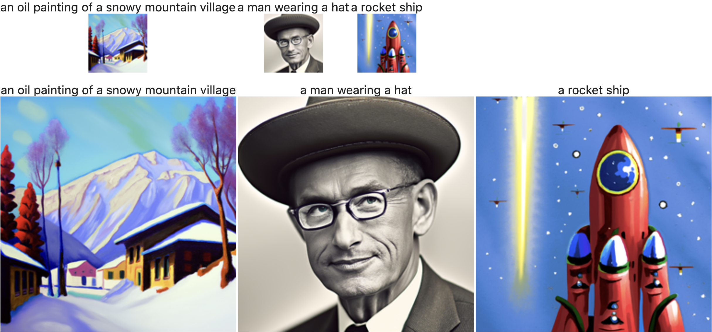
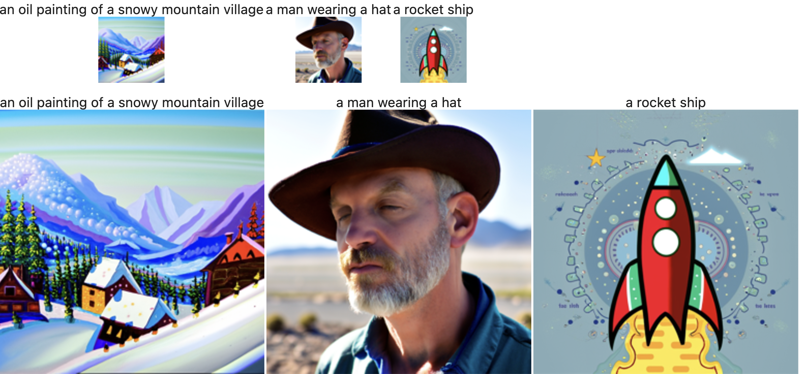
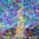

Part A: Diffusion Playground
- Here we explore the power of diffusion models mainly by implementing multiple ways of sampling, which is basically inference.
- The Diffusion Model we use is DeepFloyd IF with text embeddings from TF.
- Let's get started!
Part 0: Setup and initials
-
Steps:
- Created a Hugging Face account and logged in.
- Accepted the license for the DeepFloyd model and generated a Hugging Face Hub token.
- Downloaded precomputed text embeddings to avoid GPU memory issues.
- Instantiated the
stage_1andstage_2objects for text-to-image generation. - Used provided prompts and experimented with different
num_inference_stepsvalues.
- Below are results of taking different
num_inference_stepsvalues for the same prompt. num_inference_stepson stage 1 won't affect the quality, but affects where the set of generated images will be on the image manifold.- On the other hand,
num_inference_stepson stage 2 DO affect the quality of the generated images. - It's also obvious that the larger the
num_inference_stepson stage 2, the more the details. Compare image 1 and 2, image 3 and 4 to get a feeling for this.

Stage 1: 20, Stage 2: 20
Stage 1: 20, Stage 2: 100
Stage 1: 100, Stage 2: 20

Stage 1: 100, Stage 2: 100
Part 1: Sampling Loops for inference
- The key part of this section is to generate images given a Diffusion model,
- Since the model is trained to denoise following a noise shedule
- It's hallucination nature would result in inperfect reconstruction of the image from pure noise, which is useful for us to generating new images that also lie on the image manifold.
- The key to make the generation work is to construct good sampling procedures that guide the model to denoise on the right image at the right timestep for the desired result.
1.1: Implementing the Forward Process
-
Steps:
- The forward process in diffusion models: noise is added to a clean image to produce progressively noisier versions.
- The formula for adding more noise: \( q(x_t \mid x_0) = \mathcal{N}(x_t; \sqrt{\bar{\alpha}_t} x_0, (1 - \bar{\alpha}_t) \mathbf{I}) \).
- We compute it using: \( x_t = \sqrt{\bar{\alpha}_t} x_0 + \sqrt{1 - \bar{\alpha}_t} \epsilon, \, \epsilon \sim \mathcal{N}(0, 1) \)
- Downloaded the Berkeley Campanile image and resized it to 64x64 pixels as the test input.
- Used the
alphas_cumprodvariable to computeᾱ_tvalues at timestepst = 250, 500, 750. - Implemented the
forward(im, t)function to simulate the addition of noise at the specified timesteps.
gaussian_blur_final
1.2: Classic Denoising
1.3: One-Step Denoising
1.4: Interative Denoising
1.5: Diffusion Model Sampling
1.6: Classifier-Free Guidance (CFG)
1.7: Image-to-Image Translation
1.7.1: SDEdit -- Editing Hand-Drawn and Web Images
1.7.2: Inpainting
1.7.3: Text-Conditional Image-to-Image Translation

gaussian_blur_final
gaussian_blur_final
gaussian_blur_final
gaussian_blur_final